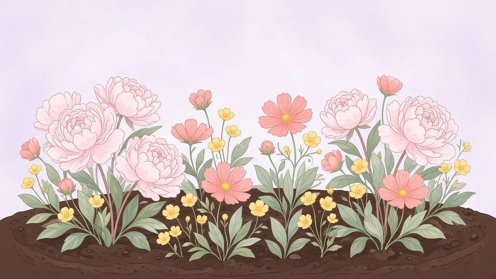
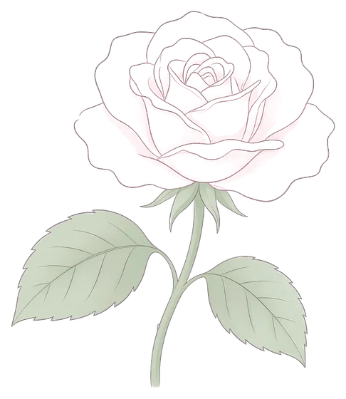
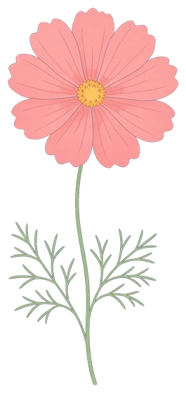
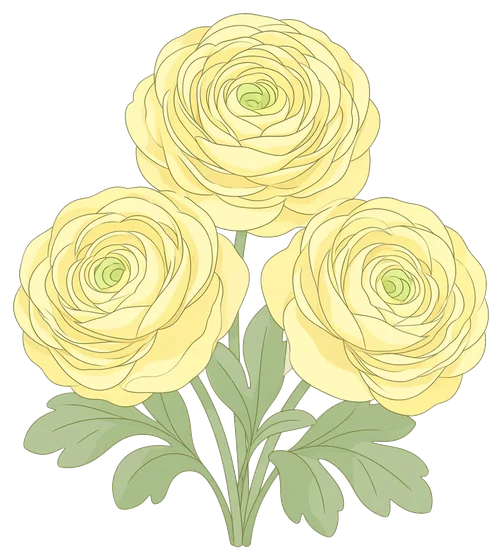
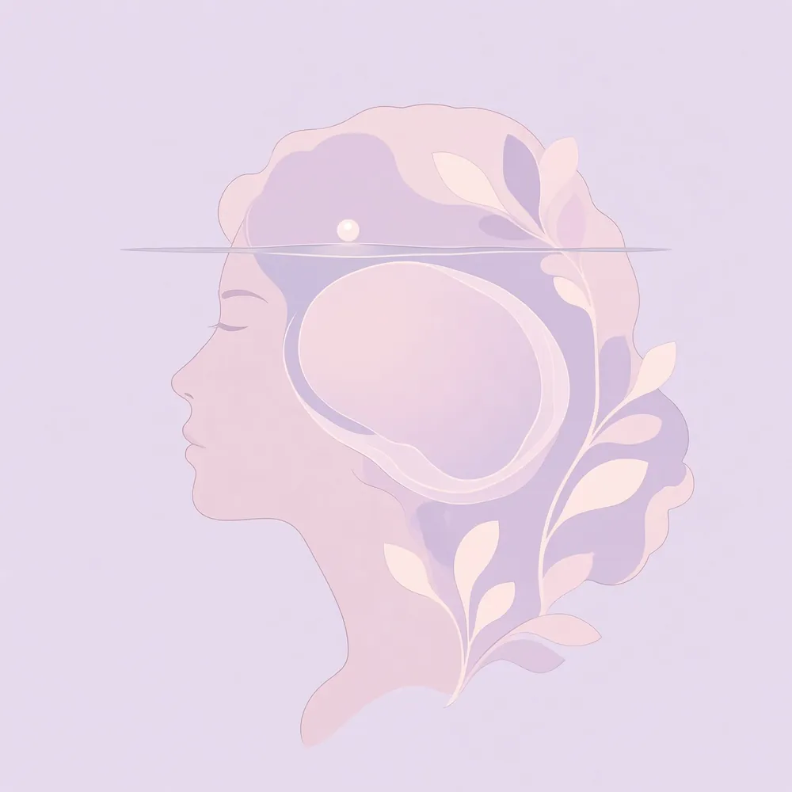
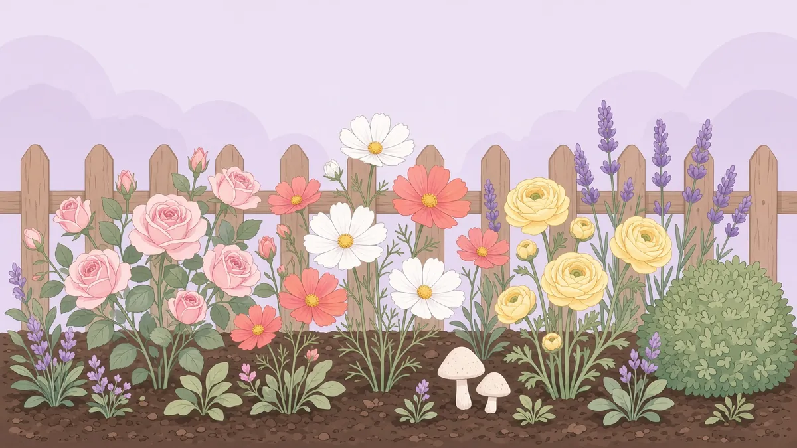
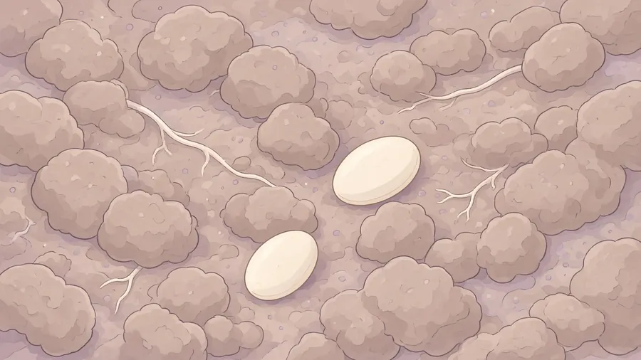
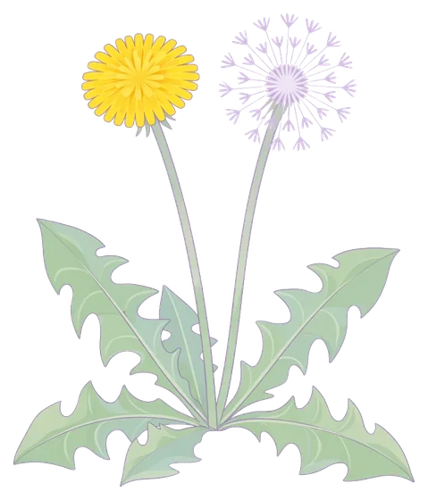
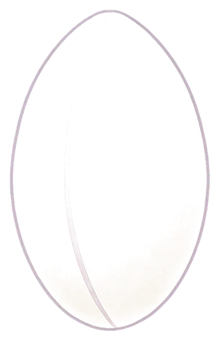
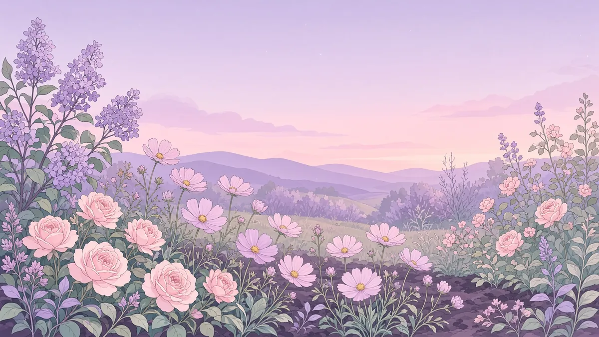

Раз ты это открыла — тема уже не случайна. Тебя давно занимает, что такое подсознание, почему оно рулит жизнью, откуда берутся те самые программы и страхи — и почему сознание оказывается бессильным перед тем, что скрыто.
Я Надежда Дарбинян. Гипнотерапевт и мастер работы с подсознанием.
Сегодня я рядом. Проведу тебя по этой теме бережно.




Схема
Сознание и подсознание
Над водой — маленький свет. Это сознание: то, что ты замечаешь. Под водой нарисован большой круг — не шар и не второй человек. Так видно, сколько подсознания. Его гораздо больше. Это одна голова.

Сознание
Подсознание
Света над водой мало — это сознание. Всё, что ниже, — подсознание. Круг на рисунке только показывает, насколько его больше.
01
Сознание
Сознание делает одно действие в секунду. Это маленький свет: то, что ты замечаешь прямо сейчас.
Оно складывается из четырёх вещей.
1. Аналитическое мышление
Как дойти до туалета. Куда повернуть голову. Какой кофе заказать. Простые шаги «здесь и сейчас».
2. Рациональное мышление
Оно всегда находит оправдание. Успокаивает, объясняет, иногда вводит в заблуждение — и часто обманывает тебя так мягко, что ты этого не видишь.
3. Сила воли
Её же можно назвать ответственностью. Это то, что поднимает тебя в шесть, потому что нельзя опоздать. То, что следит, чтобы ребёнка забрали вовремя.
4. Временная память
Сейчас это нужно — я помню. К вечеру это уже не влияет на жизнь. Я забыла.
Поэтому сознание кажется сильным, пока задача короткая. Как только дело уходит глубже — одного этого света уже не хватает.
02
Подсознание
Это подсознание: всё, что под водой. Его намного больше, чем света над ней. Пока сознание занято одним шагом — кофе, поворот, «не опоздать», — подсознание уже ведёт день.
Оно не спорит и не объясняет. Оно включает то, что уже записано. Кто-то повышает голос — тело сжимается раньше мысли. Утром ты решила «сегодня иначе». К вечеру рука сама тянется к старому. Ты знаешь правильные слова и всё равно делаешь по-старому.
Это не слабость характера. Это подсознание, которое сработало без спроса.
Что там лежит
Привычка. Страх. Чужая фраза, которая уже звучит твоим голосом: «я недостаточно…», «мне нельзя…», «сначала все, потом я…». На месте многоточия может стоять твоё. И то, что тело помнит само — сжаться, замолчать, угодить, вспыхнуть. Сознание этого не видит, пока оно само не всплывёт.
Как туда попадает чужое
Не через одну умную мысль. Такую мысль сознание ещё может отбросить. В подсознание программа входит иначе.
Когда спорить ещё нечем. В детстве чужая фраза садится как закон, а не как чьё-то мнение. «Не высовывайся». «Ты слишком…». «Любовь надо заслужить».
Когда одно и то же звучит снова. Дома, в школе, в паре, на работе, в ленте и в собственном пересказе.
Один раз — почти ничего. Каждый день — уже запись.
Когда чувство сильное. Стыд, страх, унижение, восторг записывают с одного раза. Потом логика бессильна: спорить уже не с чем.
Внутри остаётся не довод, а удар.
Когда это сказал человек, от которого зависели безопасность или любовь. Часто это звучало как забота: «я же для тебя».
Когда это была картинка, а не объяснение. Тон, лицо, сцена, ролик, досмотренный до конца. Подсознание берёт сцену охотнее, чем длинный абзац.
Как это выглядит
Девушка уже взрослая. Она хочет быть заметной: чтобы её знали, чтобы о ней говорили, чтобы жизнь была на виду. Сознание с этим согласно. Оно даже строит шаги: снять, написать, выйти, сказать.
А дело не двигается. Голос садится, когда надо представиться. Рука не нажимает «опубликовать». В компании она знает, что сказать, и молчит. Потом сознание находит мягкое объяснение: «ещё не время», «я не такая», «потом».
Это не лень. В подсознании с детства лежит другое: не высовывайся, молчи, а что скажут люди. Хотеть известности она начала уже взрослой. А запрет сидит внутри гораздо дольше — его посадили, когда спорить было ещё нечем. Новое желание не стирает старую запись. Поэтому сознание хочет, чтобы её знали, а тело по привычке делает тишину.
Новое желание не отменяет то, что записано раньше.
Почему словами это не меняется
«Я достойна», «просто успокойся», «это нелогично» — это речь сознания.
Подсознание держит не речь.
Оно держит повтор, чувство и то, что тело уже сделало много раз.
Сила воли может удержать час: не сорваться, не поверить старой мысли. Потом она кончается, а запись никуда не делась. Ей не нужно твоё внимание, чтобы включиться.
Утром ты поняла. Это временная память. К вечеру понимание слабеет. Запись в подсознании от этого не стирается.
Спор тоже не вынимает. Если чужая фраза уже звучит внутри, спор с ней — ещё один повтор.
Подсознание принимает внимание как подтверждение.
Теперь клумба
Вся эта жизнь — одна грядка
Всё, что ты только что прочитала — сознание, подсознание, четыре короткие вещи сознания и то, как чужое садится вглубь, — сейчас будет клумбой. Клумба — это твоя жизнь.
Наверху цветы: их видно, их хочется менять. Внизу земля: её не видно, и именно она решает, что вообще сможет взойти.

Разные цветы, куст, грибы у края и изгородь. Это не набор украшений. Это жизнь, которая растёт из своей земли.
Почва — подсознание
Её не видно. От неё всё. Можно менять цветы хоть каждый сезон. Если земля кислая и чужая — взойдёт то же.
Сорняк — чужая программа
Не «плохой характер». Растение, которое не твоё, но хорошо умеет жить на этой грядке. Косилка — сила воли — срезает ботву. Корень остаётся в почве. Завтра снова.
Корень — детская запись
(то, что посадили рано: страх и фразы глубже сорняка)
«Будь удобной». «Не выделяйся». «Сначала другие». Это не характер. Пока корень цел, клумба снова отращивает именно это.
Рассада с чужого рынка
(чужое мнение и чужие программы)
Чужая жизнь, которую примеряешь. Красивый куст. Корней в твоей земле нет. Поэтому он тяжёлый и просит, чтобы его всё время поддерживали снаружи.
Полив без меры
Забота, которая топит. Тревога, сладкое, советы, чужие методики. Сад не просит ещё одну лейку. Он просит дренаж.
Изгородь — граница
Без неё в клумбу заходят чужие ноги и чужие семена. Это не злость. Это контур грядки.
Это не вторая теория. Это те же сознание и подсознание, только на грядке.
Дальше
Косилка не достаёт корня
Почему фраза не меняет землю, ты уже знаешь. Ниже можно это увидеть руками, а потом — что делать с грядкой.
Проверь сама
Два шага
Шаг 1. Нажми любую фразу на сорняк. Он останется. Шаг 2. Семь раз нажми «повторить» — из семени взойдёт цветок.
Шаг 1
Скажи сорняку


Так можно говорить себе: «я достойна», «просто успокойся», «хватит так думать». Сознание это слышит. Сила воли на этом и держится — недолго, на четыре такие фразы. Потом она кончается, а сорняк стоит как стоял. Фраза до подсознания не дошла.
Шаг 2
Повтори новое

Это уже не фраза. Семя — новое дело, посаженное в ту же землю. Каждый нажатый раз подсознание может оставить себе. На седьмом из семени вырос цветок: не потому что нашлись правильные слова, а потому что одно и то же случилось много раз. Так подсознание и записывает — повтором, не одной умной мыслью.
Назвать сорняк
Пока он без имени, его поливают как розу. Назови: это программа, не факт.
Перестать его поливать
Пересказ, спор и чужой совет — та же вода. Изгородь здесь и нужна: не каждая нога и не каждое семя входят в грядку.
Посадить своё и повторить
Маленькое действие, много раз, с телом. Не ещё одна красивая фраза и не чужая рассада.
Дать время
Старый корень ещё жив, пока новое занимает место. Срыв — не приговор. Это глубина записи.

Сознание замечает. Подсознание помнит. Клумба показывает, что из этого выросло.
Это образ, чтобы стало понятно, — не диагноз. Если внутри очень тяжело, с этим лучше идти к живому человеку, а не только к метафоре.
Если хочется поговорить — напишите.
Вопрос, своя история или просто «хочу разобраться». Без анкеты и без спешки. Я отвечу в переписке.